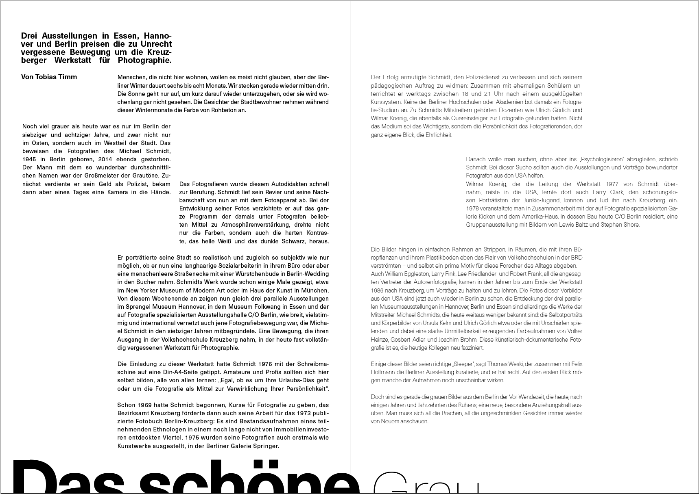
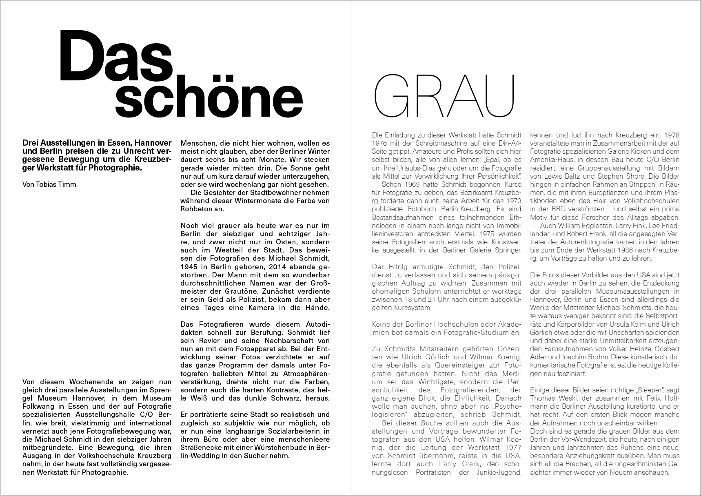

Typography
For our typography class, we are in progress of
designing a DINA4 spread. I am currently playing
with different values of grey. This is still in progress.
 
For our typography class, we are in progress of
designing a DINA4 spread. I am currently playing
with different values of grey. This is still in progress.